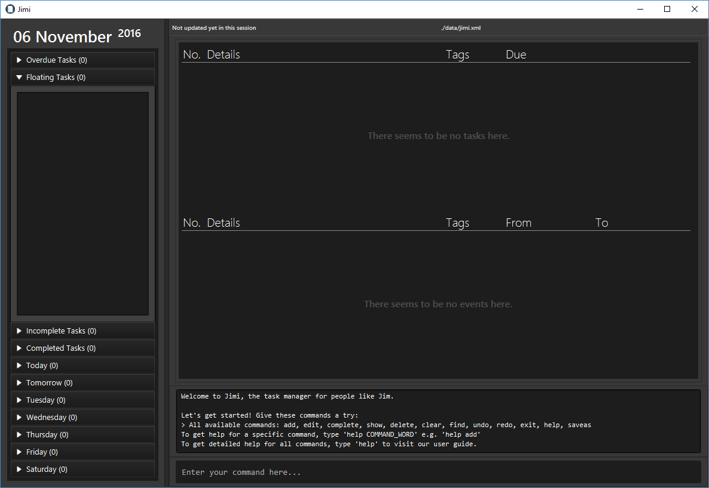
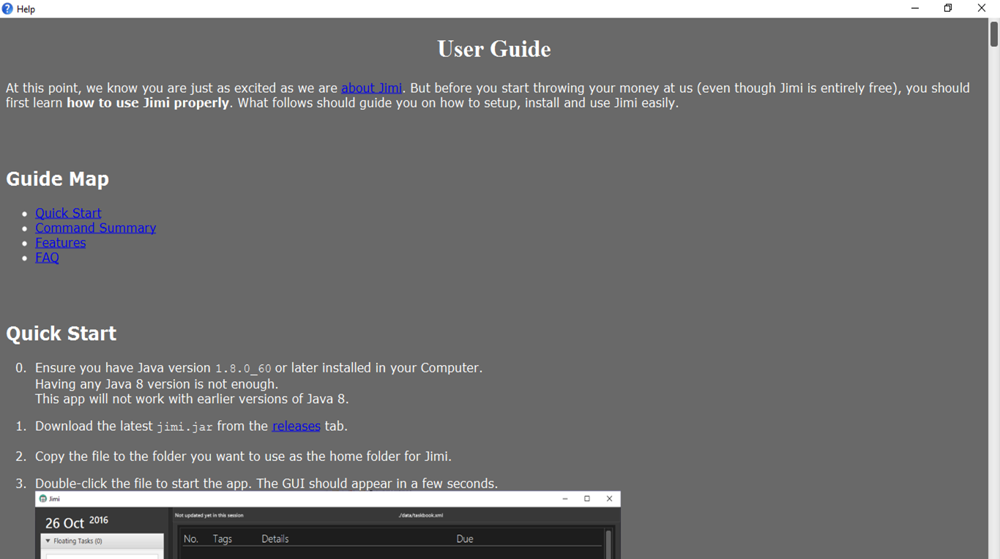
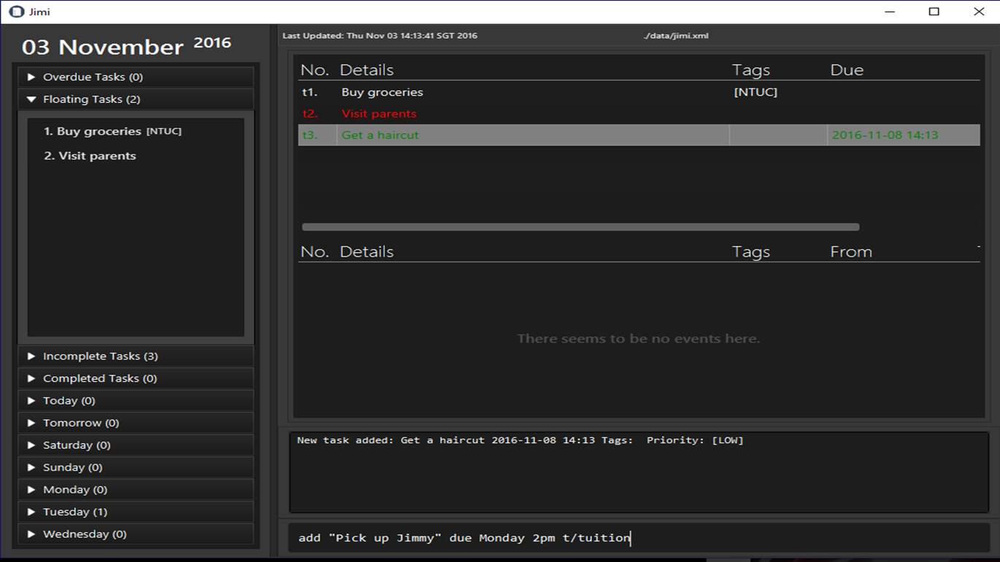
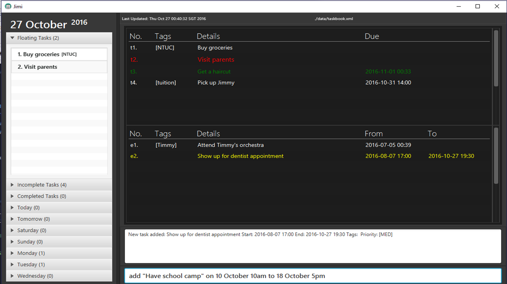
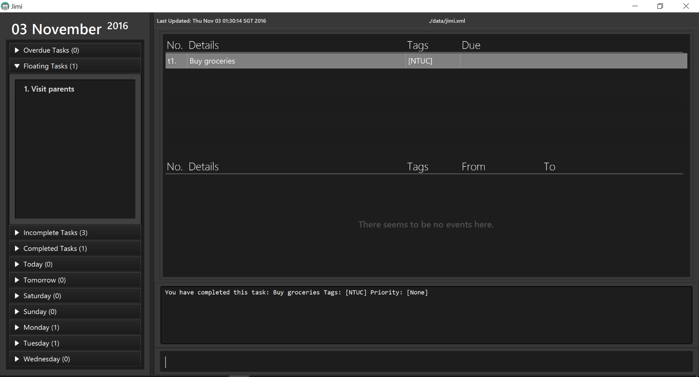
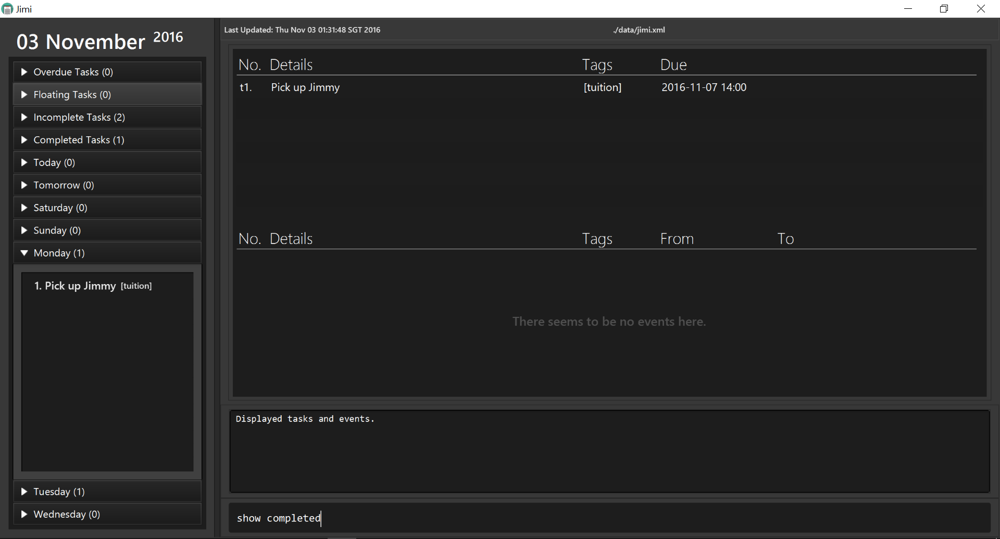
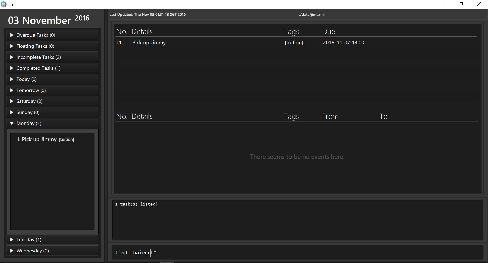
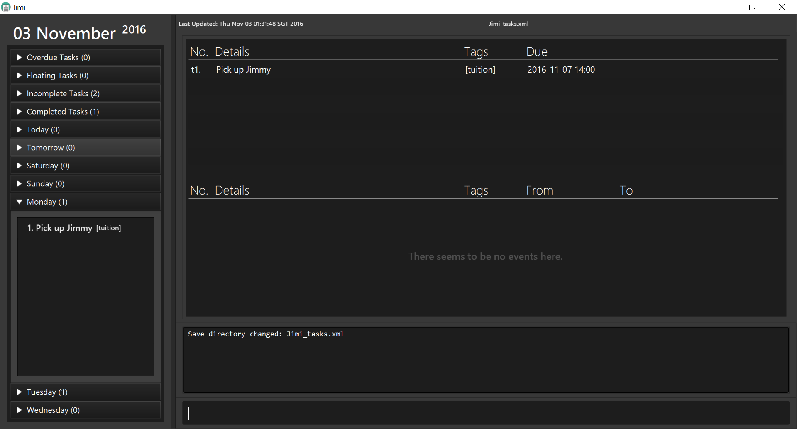

add "Buy groceries" t/NTUCadd "Visit parents" p/HIGH
At this point, we know you are just as excited as we are about Jimi. But before you start throwing your money at us (even though Jimi is entirely free), you should first learn how to use Jimi properly. What follows should guide you on how to setup, install and use Jimi easily.
Ensure you have Java version 1.8.0_60 or later installed in your Computer.
Having any Java 8 version is not enough.
This app will not work with earlier versions of Java 8.
jimi.jar from the releases tab.Double-click the file to start the app. The GUI should appear in a few seconds. 
help and pressing Enter will open this user guide in another window.add "do laundry" due tomorrow : adds a task named do laundry due tomorrow to Jimi.deletet1 : deletes the 1st task shown in the current task listexit : exits the app
| Command | Format |
|---|---|
| Help | help |
| Add | add "TASK_DETAILS" [t/TAG] [p/PRIORITY] |
add "TASK_DETAILS" due DATE_TIME [t/TAG] [p/PRIORITY] |
|
add "EVENT_DETAILS" on START_DATE_TIME [to END_DATE_TIME] [t/TAG] [p/PRIORITY] |
|
| Complete | complete INDEX |
| Delete | delete INDEX |
| Edit | edit INDEX NEW_DETAILS |
| Show | show SECTION |
| Undo | undo |
| Redo | redo |
| Find | find KEYWORD [MORE_KEYWORDS] |
| SaveAs | saveas NEW_DIRECTORY |
| Clear | clear |
| Exit | exit |
UPPER_CASE with your input.[] are optional.add [DATE_TIME] due [TASK_DETAILS] is invalid.exit or clear, you are required to type the full command word.add works as well as ADD.| Command | Default Command Word | Shortcuts |
|---|---|---|
| Help | help |
h, he, hel |
| Add | add |
a, ad |
| Compete | complete |
c, co, com, ... , complet |
| Delete | delete |
d, de, del, ... , delet |
| Edit | edit |
e, ed, edi |
| Show | show |
s, sh, sho |
| Undo | undo |
u |
| Redo | redo |
r |
| Find | find |
f, fi, fin |
| SaveAs | saveas |
None |
| Clear | clear |
None |
| Exit | exit |
None |
Input of Task/Event Name
".
Input of Date and Time in Commands
Input of Index
helpTeaches you how to use Jimi.
Format: help
The user guide will open in another window.

addAdding a floating task to Jimi.
Format: add "TASK_DETAILS" [t/TAG] [p/PRIORITY]
- Floating tasks are tasks without any deadlines.
Examples:
add "Buy groceries" t/NTUCadd "Visit parents" p/HIGH
Adds a task with a deadline to Jimi.
Format: add "TASK_DETAILS" due DATE_TIME [t/TAG] [p/PRIORITY]
Examples:
add "Get a haircut" due Tuesday p/LOWadd "Pick up Jimmy" due Monday 2pm t/tuition
Adds an event to Jimi.
Format: add "EVENT_DETAILS" on START_DATE_TIME [to END_DATE_TIME] [t/TAG] [p/PRIORITY]
- If the event is more than a day long, you may include the end date_time.
- You may define the end time of the event if you wish. If you do not, however, Jimi will assume your event lasts a day long.
Examples:
add "Attend Timmy's orchestra" on 5th July t/Timmyadd "Show up for dentist appointment" on 8-7-2016 5:00pm to 7:30pm p/MEDadd "Have school camp" on 10 October 10am to 18 October 5pm
completeMarks an existing task as complete.
Format: complete TASK_INDEX
- Jimi will mark the task as completed at the specified
TASK_INDEX.- If you want to revert the task back as incomplete, use the
undocommand.
Example:
complete t1
deleteDeletes the specified task/ event from Jimi.
Format: delete INDEX
- Jimi will delete the task specified by
INDEX.- If you need to recover your deleted task/event, use the
undocommand.
Examples:
delete e2: Deletes the 2nd event in Jimi.delete t1Deletes the 1st task in the Jimi.
editEdits the specified detail of any task or event.
Format: edit INDEX NEW_DETAILS
INDEX, NEW_DETAILS are simply the edits you want to make. NEW_DETAILS that Jimi recognizes when editting: | Editting A | What to Type for NEW_DETAILS |
Examples | What Jimi Will Do |
|---|---|---|---|
| Dateless Task | ["NEW_TASK_DETAILS"] [t/NEW_TAG] [p/NEW_PRIORITY] | edit t1 "finish this user guide" | Edit just the name of task t1. |
| Deadine Task | ["NEW_TASK_DETAILS"] [due NEW_DATETIME] [t/NEW_TAG] [p/NEW_PRIORITY] | edit t4 t/bobz | Edit just the tag of task t4. |
| Event | ["NEW_TASK_DETAILS"] [on NEW_START_DATETIME] [to NEW_END_DATETIME] [t/NEW_TAG] [p/NEW_PRIORITY] | edit e2 "go to concert" to monday p/LOW | Edit name, end date and priority of event e2. |
NEW_DETAILS that Jimi recognizes when converting: | Converting To | What to Type for NEW_DETAILS |
Examples |
|---|---|---|
| Dateless Task | float | edit e1 float |
| Deadline Task | ["NEW_TASK_DETAILS"] due NEW_DATETIME [t/NEW_TAG] [p/NEW_PRIORITY] | edit e3 due tomorrow [p/HIGH] |
| Event | ["NEW_TASK_DETAILS"] on NEW_START_DATETIME [to NEW_END_DATETIME] [t/NEW_TAG] [p/NEW_PRIORITY] | edit t1 "skip CS2103 lecture" on 29 oct [t/IMPT] |
- If you want to undo your edit, use the
undocommand.
showExpands and lists sections from the left summary panel.
Format: show SECTION
SECTIONis case-insensitive.- For the sections with two words, you can type just the first word of the two.
Examples:
show mondayshow completed
undoUndoes the previous action done in Jimi.
Format: undo
redoRedoes the previously undone action done in the task manager.
Format: redo
findFinds and lists all tasks in Jimi whose name contains any of the argument keywords.
Format: find KEYWORD [MORE_KEYWORDS]
- The order of the keywords you type in does not matter. e.g.
Essay writingwill matchWriting essay- Only the task details are searched.
- Only full words will be matched e.g.
Essaywill not matchEssays- Tasks with details matching at least one keyword will be returned (i.e.
ORsearch). e.g.Writingwill matchWriting essay
Examples:
find Jimmyfind Haircut
saveasSets new save directory for the tasks and events in Jimi. Format: saveas NEW_DIRECTORY
NEW_DIRECTORYshould be in the format:[desired_path]/[file_name].xml- If you want to reset the save directory back to default, type
saveas reset
Example:
saveas Jimi_tasks.xml
clearClears all entries from Jimi.
Format: clear
If you want to undo your clear, use the
undocommand.
exitExits the program.
Format: exit
Before exiting the program, ensure you have no unwanted actions that need to be reverted. You can only undo actions done in the current session.
Address book data are saved in the hard disk automatically after any command that changes the data.
There is no need to save manually.
Q: How do I transfer my data to another Computer?
A: Install the app in the other computer and overwrite the empty data file it creates with the file that contains the data of your previous Address Book folder.
Q: Is there a way to be notified of upcoming tasks or events that are due soon?
A: Jimi will display all overdue tasks, upcoming tasks and events at the top Agenda box, so you will always be notified of the most important details first.
Q: What happens if I typed in a wrong command?
A: An unknown command message will be shown to you.
Q: What happens if I typed in the format wrongly?
A: An invalid command format message will be shown to you, along with the correct format you should use instead.